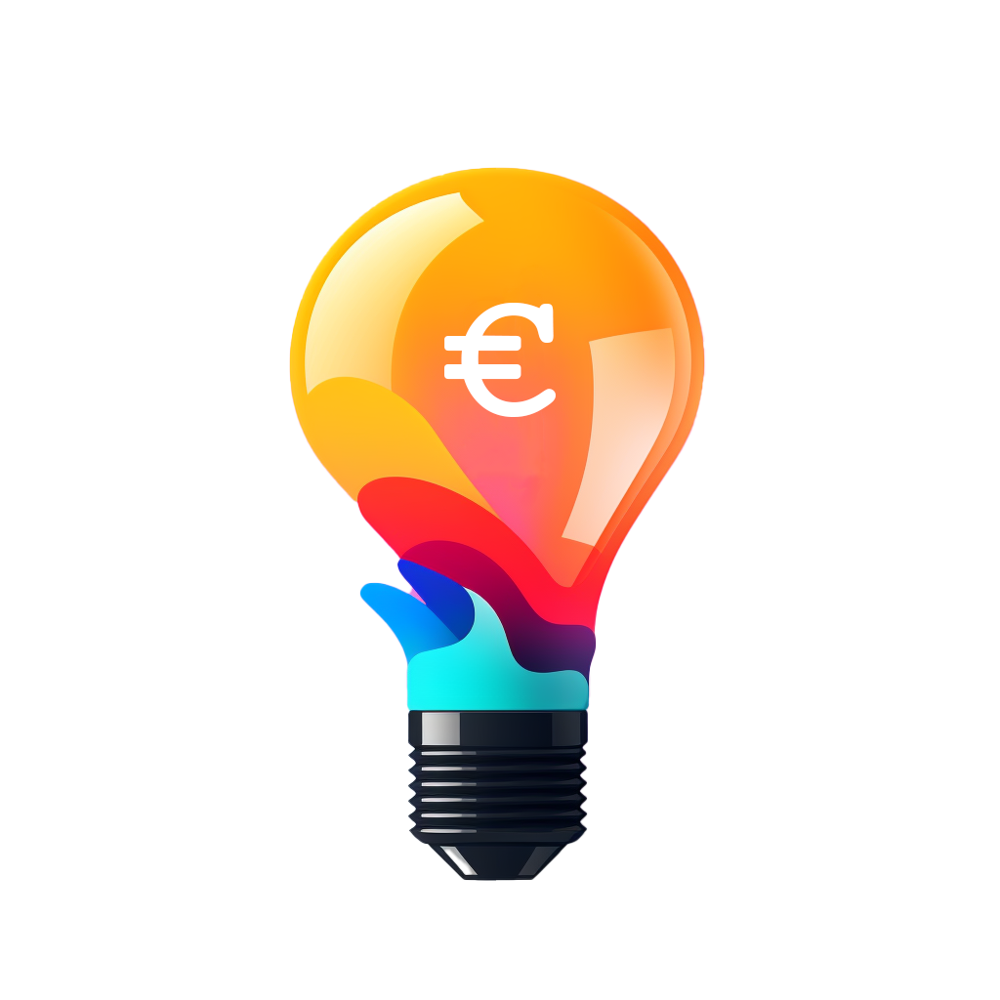

<header class="fixed top-0 left-0 right-0 bg-gradient-to-r from-blue-500 to-white dark:from-black dark:to-slate-900 text-slate-800 dark:text-white shadow-xl border-b border-blue-100 dark:border-white/5 transition-all duration-500 z-50 backdrop-blur-md">
  <nav class="max-w-7xl mx-auto px-4 sm:px-6 lg:px-8 h-16 flex items-center justify-between">
    <div class="flex items-center space-x-3 group cursor-pointer">
      <div class="relative">
        <div class="absolute -inset-1 bg-gradient-to-r from-blue-600 to-indigo-600 rounded-full blur opacity-25 group-hover:opacity-75 transition duration-1000 group-hover:duration-200"></div>
        
      </div>
      <span class="text-2xl font-bold tracking-tight font-lexend bg-clip-text text-transparent bg-gradient-to-r from-blue-700 via-indigo-700 to-blue-900 dark:from-white dark:via-purple-100 dark:to-purple-200">
        precio<span class="font-extrabold italic">luz</span>hoy<span class="text-blue-500 dark:text-purple-400 font-medium text-lg">.net</span>
      </span>
    </div>
    <div class="flex items-center space-x-5">
      <button (click)="themeService.toggleTheme()"
              class="relative p-2 rounded-xl bg-blue-500/5 dark:bg-white/5 hover:bg-blue-500/10 dark:hover:bg-white/10 border border-blue-500/10 dark:border-white/10 transition-all duration-300 focus:outline-none group overflow-hidden"
              [title]="themeService.isDarkMode() ? 'Cambiar a modo claro' : 'Cambiar a modo oscuro'">
        <div class="absolute inset-0 bg-gradient-to-br from-blue-500/10 to-indigo-500/10 opacity-0 group-hover:opacity-100 transition-opacity"></div>
        @if (themeService.isDarkMode()) {
          <svg xmlns="http://www.w3.org/2000/svg" class="h-5 w-5 text-yellow-300 relative z-10 animate-pulse" fill="none" viewBox="0 0 24 24" stroke="currentColor">
            <path stroke-linecap="round" stroke-linejoin="round" stroke-width="2" d="M12 3v1m0 16v1m9-9h-1M4 12H3m15.364-6.364l-.707.707M6.343 17.657l-.707.707m12.728 0l-.707-.707M6.343 6.343l-.707-.707M12 8a4 4 0 100 8 4 4 0 000-8z" />
          </svg>
        } @else {
          <svg xmlns="http://www.w3.org/2000/svg" class="h-5 w-5 text-blue-600 relative z-10" fill="none" viewBox="0 0 24 24" stroke="currentColor">
            <path stroke-linecap="round" stroke-linejoin="round" stroke-width="2" d="M20.354 15.354A9 9 0 018.646 3.646 9.003 9.003 0 0012 21a9.003 9.003 0 008.354-5.646z" />
          </svg>
        }
      </button>
      <div class="hidden md:flex items-center space-x-1">
        <!-- Future nav links could go here -->
      </div>
    </div>
  </nav>
</header>
